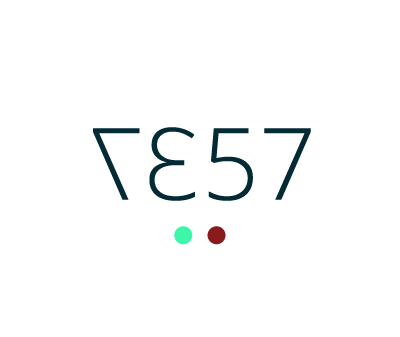

a browser and OS agnostic web driver for mobile and desktop
a browser and OS agnostic web driver for mobile and desktop

Bored to death to swipe around in order to be sure device X still works? If so, give testardo a chance!
testardo is the easiest way to test your local projects with some remote service testing capabilities too. You can be notified if something goes wrong, you can change tests at runtime and have an instant update for all running devices, you can forget SDKs, special software, drivers, patches and fixes ... you create the test with everything you know and need already with the ability to include libraries and utilities at runtime.
testardo will be instantly useful thanks to its status colors on any device display: green for success, yellow if the server is offline, red when there was an error and with shown error info ... as easy as that!
To use testardo ... all you need is the testardo file. Grab it or simply install it via npm install -g testardo.
The executable will create a testing environment showing the URL to load through your device browser. As long as your Mac/Linux machine is reachable through the same network there's really nothing else to do.
If you want to have an idea of testardo options at launch time, please check the how-to file, or launch ./testardo without arguments in your console.
Landed in version 0.2.x basic HTTPS support, i.e. testardo --host=webreflection.github.io --https examples/eddy.js
A huge thank to @gianlucaguarini for his grunt-testardo plugin.
A very basic example is shown in this file.
Write ./testardo --host=google.com --loop=0 examples/google-search.js and connect to the full url shown in the terminal.
This will look something like: en1: http://192.168.1.146:7357/$ where the full url to connect to will be http://192.168.1.146:7357/$
If you want to know more and see a video about testardo feel free to reach the original post in my blog
So far, testardo has been tested with the following Mobile browsers:
Above list will change as soon as new devices will be tested.
The list of compatible and tested Desktop browsers:
Above list will change as soon as different browsers will be tested.
Ideally old IE browsers should work too (at some point).
Selenium is cool but there's no selenium for platforms different from Android and iOS. This makes integration tests extremely painful for all other phones, both newer and older.
testardo would like to simplify one-shot or infinitely repeated integration tests with any browser you would like to test.
Any help will be more than appreciated.
./testardo there was not a single alternative for cross browser and cross OS integration tests. However, and ironically if you want, you could run Karma inside testardo if you think your unit test framework needs to be tested through integrations with browsers or devices ... go crazy with all sort of tests as long as you test something in a meaningful way ;-)npm but just some version of node and you still want that machine to be able to be the server for a rack of testing devices ... testardo wants to be a zero config and zer stress solution as agnostic as possible on the server side too. Creating a single JS file that is used for both the server and the client part was also a very interesting achievement many talked about before, few did in a concrete way as testardo does :-)sandbox is rather an utility you can feel free to not use or ignore, passing through the provided window or document arguments.7357 with similar capital letters where 7 == T, 3 == E, and 5 == S, you'll realize such port is the easiest to remember ever for TEST purposes